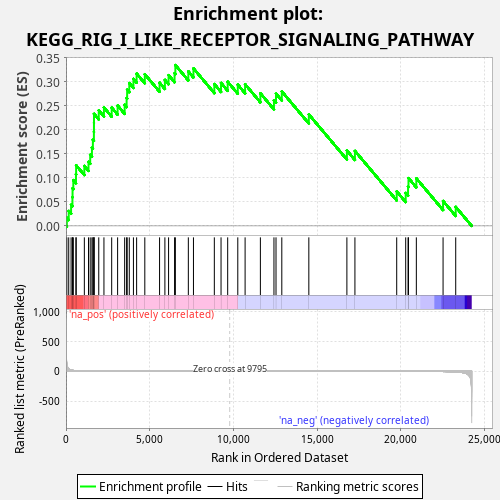
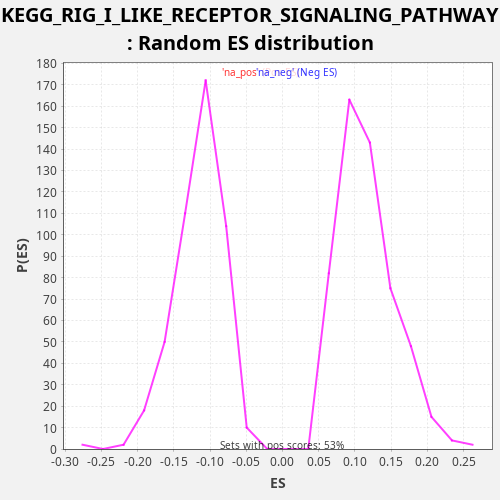

| Dataset | LabCL |
| Phenotype | NoPhenotypeAvailable |
| Upregulated in class | na_pos |
| GeneSet | KEGG_RIG_I_LIKE_RECEPTOR_SIGNALING_PATHWAY |
| Enrichment Score (ES) | 0.33491328 |
| Normalized Enrichment Score (NES) | 2.8755686 |
| Nominal p-value | 0.0 |
| FDR q-value | 4.4594595E-4 |
| FWER p-Value | 0.001 |

| SYMBOL | RANK IN GENE LIST | RANK METRIC SCORE | RUNNING ES | CORE ENRICHMENT | |
|---|---|---|---|---|---|
| 1 | ISG15 | 51 | 120.083 | 0.0168 | Yes |
| 2 | IFIH1 | 163 | 38.740 | 0.0310 | Yes |
| 3 | DHX58 | 304 | 21.191 | 0.0441 | Yes |
| 4 | TRIM25 | 385 | 16.422 | 0.0597 | Yes |
| 5 | IRF7 | 392 | 15.987 | 0.0783 | Yes |
| 6 | CASP8 | 438 | 14.014 | 0.0953 | Yes |
| 7 | TRAF2 | 596 | 9.432 | 0.1077 | Yes |
| 8 | IFNB1 | 606 | 9.116 | 0.1262 | Yes |
| 9 | CXCL10 | 1096 | 3.825 | 0.1248 | Yes |
| 10 | RELA | 1345 | 2.608 | 0.1335 | Yes |
| 11 | OTUD5 | 1446 | 2.292 | 0.1482 | Yes |
| 12 | RIPK1 | 1550 | 2.028 | 0.1628 | Yes |
| 13 | CASP10 | 1606 | 1.902 | 0.1794 | Yes |
| 14 | IKBKB | 1667 | 1.739 | 0.1958 | Yes |
| 15 | AZI2 | 1671 | 1.737 | 0.2145 | Yes |
| 16 | TBK1 | 1673 | 1.730 | 0.2333 | Yes |
| 17 | IKBKG | 1957 | 1.270 | 0.2405 | Yes |
| 18 | NFKBIB | 2267 | 0.936 | 0.2466 | Yes |
| 19 | FADD | 2730 | 0.624 | 0.2464 | Yes |
| 20 | NFKBIA | 3084 | 0.466 | 0.2507 | Yes |
| 21 | IRF3 | 3505 | 0.334 | 0.2522 | Yes |
| 22 | PIN1 | 3622 | 0.308 | 0.2662 | Yes |
| 23 | CYLD | 3654 | 0.300 | 0.2838 | Yes |
| 24 | MAPK14 | 3782 | 0.273 | 0.2974 | Yes |
| 25 | DDX3Y | 4029 | 0.228 | 0.3061 | Yes |
| 26 | MAP3K7 | 4220 | 0.197 | 0.3172 | Yes |
| 27 | TRADD | 4709 | 0.139 | 0.3158 | Yes |
| 28 | TBKBP1 | 5591 | 0.074 | 0.2983 | Yes |
| 29 | RNF125 | 5909 | 0.058 | 0.3041 | Yes |
| 30 | SIKE1 | 6129 | 0.049 | 0.3139 | Yes |
| 31 | IL12A | 6487 | 0.036 | 0.3180 | Yes |
| 32 | IKBKE | 6535 | 0.035 | 0.3349 | Yes |
| 33 | ATG12 | 7310 | 0.017 | 0.3218 | No |
| 34 | DDX3X | 7616 | 0.012 | 0.3280 | No |
| 35 | NFKB1 | 8863 | 0.002 | 0.2954 | No |
| 36 | MAPK12 | 9264 | 0.001 | 0.2977 | No |
| 37 | TRAF6 | 9661 | 0.000 | 0.3002 | No |
| 38 | TNF | 10265 | 0.000 | 0.2942 | No |
| 39 | TANK | 10702 | -0.000 | 0.2950 | No |
| 40 | MAP3K1 | 11615 | -0.004 | 0.2762 | No |
| 41 | IFNE | 12426 | -0.010 | 0.2616 | No |
| 42 | CHUK | 12549 | -0.012 | 0.2754 | No |
| 43 | CXCL8 | 12895 | -0.016 | 0.2800 | No |
| 44 | MAPK9 | 14510 | -0.048 | 0.2322 | No |
| 45 | MAPK11 | 16784 | -0.154 | 0.1571 | No |
| 46 | TRAF3 | 17264 | -0.191 | 0.1561 | No |
| 47 | NLRX1 | 19761 | -0.595 | 0.0718 | No |
| 48 | TKFC | 20298 | -0.775 | 0.0685 | No |
| 49 | MAPK13 | 20439 | -0.831 | 0.0816 | No |
| 50 | ATG5 | 20465 | -0.843 | 0.0994 | No |
| 51 | MAVS | 20934 | -1.099 | 0.0990 | No |
| 52 | MAPK8 | 22531 | -3.612 | 0.0519 | No |
| 53 | MAPK10 | 23287 | -9.536 | 0.0395 | No |

{kind=link}
{kind=link}